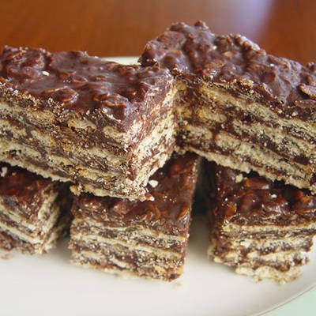

Turrón de Quaker

Ingredientes
- 6 cdas. de avena arrollada (avena instantánea, copos de avena)
- 2 cdas. de cacao en polvo (del bueno bueno, y sino, del de la leche)
- 3 cdas. de dulce de leche repostero
- 50g. de manteca
- 1 paquete de galletitas de agua (tipo Criollitas, si estás en Argentina)
- Chocolate cobertura
Receta
- Mezclar en un bol la avena, el cacao en polvo, el dulce de leche repostero y la manteca. Unir bien con la mano hasta que quede una pasta muy espesa.
- Armado: se pueden hacer como turrones individuales (como hice yo) o en una fuente grande, para luego cortarlo. Ir formando capas, primero de galleta, luego untar con la pasta, luego más galletas. Las capas que quieras, ideal dos o tres.
- Bordes: poner bien los bordes es muy importante si vas a hacerlos individuales. Hay que agarrar más pasta de avena y rellenar bien los bordes para que queden parejos.
- Llevar los turrones a la heladera. Mínimo 1 hora. Esto es para que la pasta se endurezca.
- Derretir el chocolate cobertura a baño maría. Es importante que no toque el agua y que no suba demasiado el calor, sino el chocolate se quemará. Si necesitás hacerlo más líquido, agregale unos chorritos de café. El café potencia el sabor del chocolate.
- Bañar los turrones. En mi caso, eran individuales y me parecieron bonitos los bordes para dejarlos visibles, así que la mejor y más sencilla forma que encontré de bañarlos fue que cada galleta toque el chocolate de un lado y luego del otro
- Ir colocando en una rejilla a medida que los vamos bañando
- Llevar a la heladera un par de horas